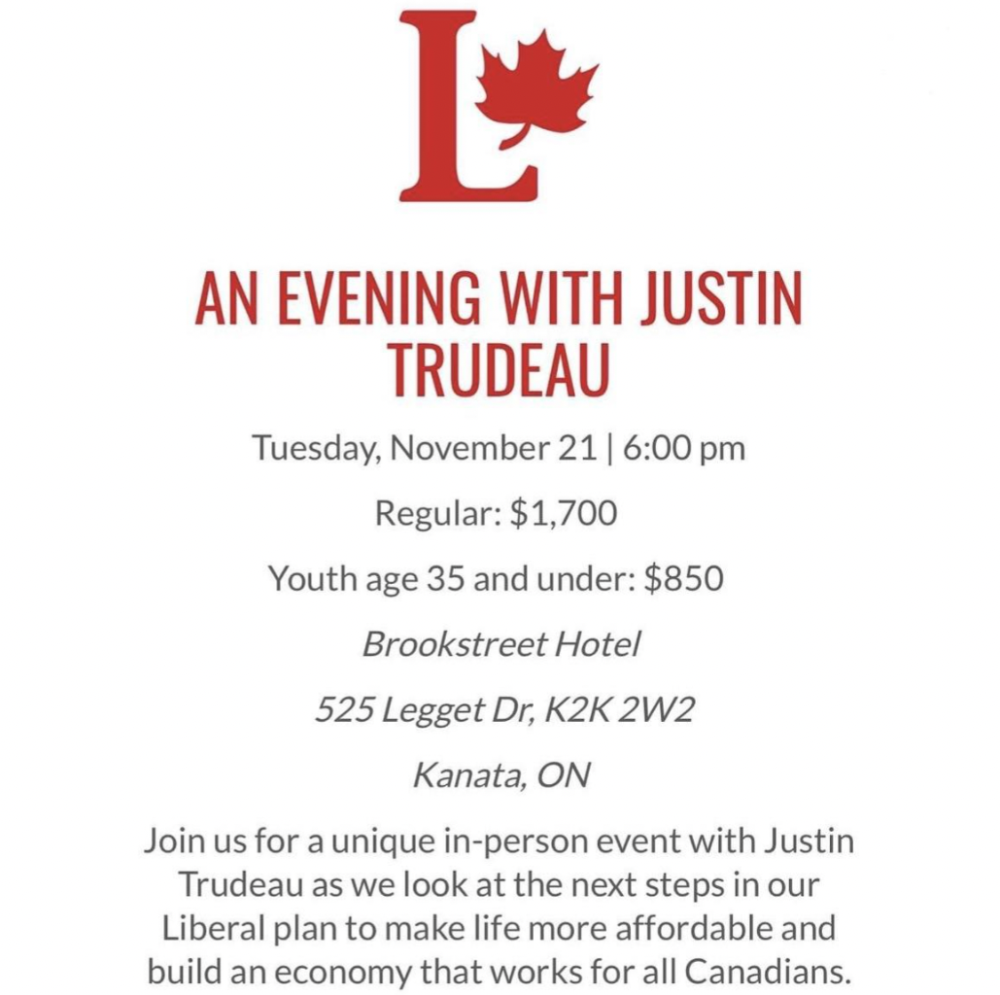

The wealthiest Canadians are buying political access with your tax dollars
Scroll to learn how
Each dot is 10,000 Canadians
These dots show every eligible Canadian voter
Canadians who voted
Canadians who didn't vote
Roughly 2 in 3 eligible Canadians cast a vote in our federal elections
Less than 1% of eligible voters donate to federal political parties
As of 2025, the maximum an individual can donate to a political party is $1750, and increases by $50 each year
And only a handful of them can afford to donate big
Just 1 in 2000 eligible voters donates more than $1000 to parties
These big donors are responsible for a third of money donated to parties
So it's natural for parties to focus their time and energy on this group
To meet their fundraising goals, they just need to win over fewer people than there are Leafs season ticket holders
Money buys access, & access can lead to influence
Both the Liberals and Conservatives host private events with tickets that cost exactly the maximum individual donation for that year.


Our current system creates an exclusive club of elites
This elite handful of Canadians has outsized influence on the priorities and platforms of the major political parties.
Leaving most voters on the outside, looking in
But for those with enough money to buy into the club
All taxpayers help subsidize the cost
Let's look at how this system benefits the already-wealthy more than you
If you donate,
then you get a tax credit.
So only part of your donation ends up being out-of-pocket
You get the rest back on your taxes
And looking at the donors again
You can see why a third of the the taxpayer money flows back to the wealthiest donors
So what can we do to change it?
We’ve got two exciting ideas.
First, we reduce the donation limit to $100
Right now, parties only need to connect with a handful of donors to hit their fundraising goals, relying on a few big donors to get most of the way there.
But with a $100 limit, they're forced to connect with — and listen to — many more voters to turn them into donors
If you can only afford $100, your donation matters just as much as everyone else's. This reduces the outsized influence of the wealthy.
Second, we bring back the per-vote-subsidy
That means that for every vote a party recieves, they get a small amount of funding, say $2 per year.
This ensures that the public funding is aligned with the public voting.
Under this system, everyone gets to become a donor without needing to dig into their own pockets, and the taxpayer money is distributed based on the will of the people.
So not only does your vote affect this election,
but also your preferred party's ability to prepare for future ones too
How would the
per-vote-subsidy change the way you think about voting?
If everyone knew that their vote came with money for their chosen party, we might see more people deciding to vote in the first place.
About this visualization:
- Data presented was compiled by Democracy Watch from reports published by Elections Canada, Statistics Canada, and the Canada Revenue Agency.
- Donations to the Liberals, Conservatives, NDP, Greens, Bloc Quebecois, and Peoples Party have been included in the federal party visualizations, donations to smaller political parties are not included.
- The distribution of tax credits to small and large donors is an estimate and assumes all large donors claim the full tax credit amount.
- Voter turnout data for years without elections uses numbers from the most recent prior year with an election.
- Data visualization by Avo Media